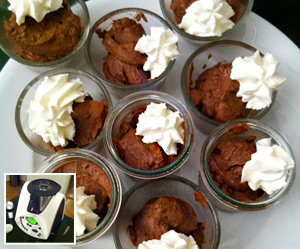

Schokoladenmousse
4 von 6100 g Blockschokolade, in Stücke 10 Sek./St. 6
120 g Schokoladenpulver und
500 g sehr kalter Vollrahm (Schlagsahne) 25-30 Sek./ St. 6
Für ca. 5 Stunden in den Kühlschrank stellen.

100 g Blockschokolade, in Stücke 10 Sek./St. 6
120 g Schokoladenpulver und
500 g sehr kalter Vollrahm (Schlagsahne) 25-30 Sek./ St. 6
Für ca. 5 Stunden in den Kühlschrank stellen.

Montagsplausch Nr. 311. Der Abend hiess «Vorwerk Thermomix Vorführung».